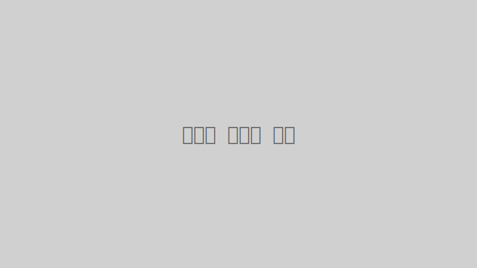

숨 막히는 절경, 스위스 알프스 횡단기: 꿈의 하이킹 코스 추천
이번 글에서는 눈 덮인 봉우리와 푸른 계곡이 어우러진 스위스 알프스를 횡단하며 경험했던 잊지 못할 하이킹 여정을 소개합니다. 융프라우요흐, 마터호른 등 세계적으로 유명한 봉우리들을 직접 눈에 담고, 그림 같은 마을들을 지나며 느꼈던 감동을 생생하게 전달해 드립니다. 특히 초보자도 즐길 수 있는 완만한 코스부터 숙련된 등반가를 위한 험난한 코스까지, 다양한 난이도의 추천 하이킹 코스와 준비물 체크리스트, 그리고 현지에서 유용했던 팁들을 상세히 정리했습니다. 스위스 대자연 속으로 떠나는 특별한 모험, 지금 바로 시작해보세요!
1. 스위스 알프스 하이킹, 왜 꿈의 코스일까요?
스위스 알프스는 단순히 아름다운 경치를 넘어, 트레킹 애호가들에게는 '성지'와도 같은 곳입니다. 잘 정비된 하이킹 코스, 깨끗한 자연 환경, 그리고 그림 같은 마을들이 어우러져 어디를 가든 감탄을 자아냅니다. 특히 대중교통(기차, 곤돌라, 버스) 연계가 잘 되어 있어, 다양한 난이도의 코스를 선택하여 즐길 수 있다는 점이 큰 매력입니다. 매년 수많은 관광객이 이곳을 찾아 대자연 속에서 진정한 휴식을 경험하고 갑니다.
2. 추천 하이킹 코스 (난이도별)
초보자를 위한 완만한 코스: 그린델발트 퍼스트(First) 정상 - 바흐알프제(Bachalpsee) 호수 트레킹
- 코스: 그린델발트 퍼스트 정상 → 바흐알프제 호수 (왕복 약 2시간)
- 특징: 곤돌라를 타고 퍼스트 정상까지 쉽게 이동 후, 완만한 길을 따라 바흐알프제 호수까지 걷는 코스입니다. '알프스의 눈물'이라 불리는 바흐알프제 호수에 비친 설산의 풍경은 그야말로 절경입니다. 가족 단위 여행객이나 가벼운 하이킹을 선호하는 분들에게 강력 추천합니다.
- 팁: 퍼스트 정상에서는 클리프 워크, 짚라인 등 다양한 액티비티도 즐길 수 있습니다.
중급자를 위한 코스: 체르마트 - 고르너그라트(Gornergrat) 파노라마 하이킹
- 코스: 고르너그라트 전망대 → 리펠제(Riffelsee) → 로텐보덴(Rotenboden) (약 2-3시간)
- 특징: 고르너그라트 열차를 타고 전망대까지 이동 후, 마터호른을 바라보며 걷는 코스입니다. 특히 리펠제 호수에 비친 마터호른의 반영은 스위스를 대표하는 이미지 중 하나입니다. 코스 중간중간 사진을 찍기 좋은 스팟이 많습니다.
- 팁: 고르너그라트 열차 티켓은 미리 예매하는 것이 좋습니다.
숙련자를 위한 도전적인 코스: 에멘탈(Emmental) 치즈 루트 트레킹
- 코스: 트륍샤헨(Trubschachen) → 랑나우(Langnau) (약 4-5시간)
- 특징: 스위스 치즈의 고향 에멘탈 지역을 걷는 코스로, 목가적인 풍경과 함께 치즈 농장을 방문하고 치즈 만드는 과정을 직접 볼 수 있습니다. 오르막과 내리막이 적절히 섞여 있어 체력 소모가 있는 편이지만, 스위스의 때묻지 않은 자연을 깊이 경험할 수 있습니다.
- 팁: 트레킹 후에는 현지 레스토랑에서 에멘탈 치즈를 활용한 다양한 요리를 맛보세요.
3. 스위스 알프스 하이킹 준비물 체크리스트
- 등산화: 발목을 잘 지지해주고 미끄럼 방지 기능이 있는 등산화 필수.
- 방수/방풍 재킷: 알프스는 날씨 변화가 심하므로 필수.
- 배낭: 물, 간식, 여벌 옷 등을 넣을 수 있는 편안한 배낭.
- 선글라스 & 선크림: 고지대에서는 자외선이 강하므로 필수.
- 지도 & 나침반/GPS 앱: 길을 잃지 않도록 준비.
- 충전기/보조배터리: 사진 촬영 및 비상 연락을 위해.
- 비상 식량: 초콜릿, 에너지바 등.
- 카메라: 알프스의 아름다운 풍경을 담기 위해!
4. 현지에서 유용한 팁
- 날씨 확인: 출발 전 반드시 현지 날씨를 확인하고 복장을 준비하세요.
- 대중교통 활용: 스위스 패스나 반액 카드 등을 이용하면 교통비를 절약할 수 있습니다.
- 물 충분히 섭취: 하이킹 중에는 수분 보충이 중요합니다.
- 쓰레기는 되가져오기: 깨끗한 자연을 위해 쓰레기는 반드시 되가져와야 합니다.
- 유연한 일정: 날씨나 컨디션에 따라 일정을 유연하게 조정하는 것이 중요합니다.
스위스 알프스에서의 하이킹은 단순한 걷기를 넘어, 대자연과의 교감, 그리고 자기 자신을 돌아볼 수 있는 소중한 시간이 될 것입니다. 이 글이 여러분의 스위스 여행 계획에 작은 도움이 되기를 바라며, 안전하고 즐거운 모험을 하시길 기원합니다!